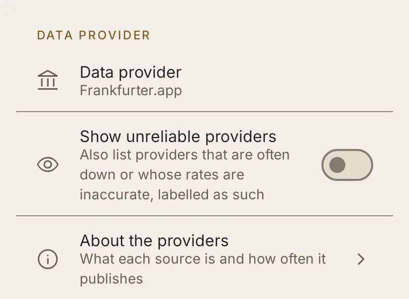
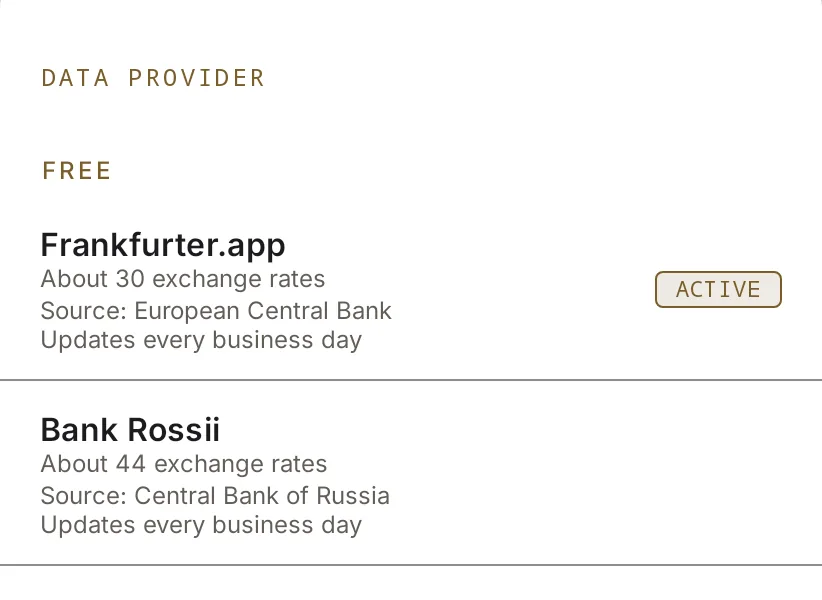
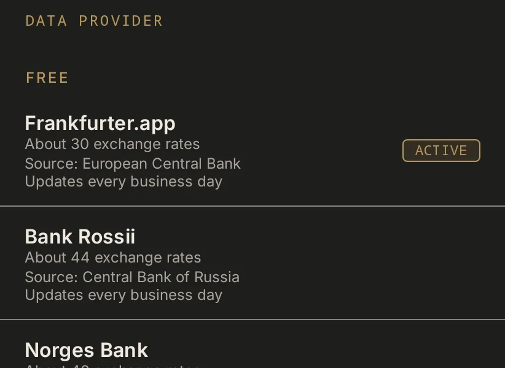

Providers
Where the rates come from: eight sources, from central banks to interbank feeds. Most need no account.
The eight, by the currency they quote in
Open a row for what it covers, how often it updates and what it needs.
Side by side
| Provider | Currencies | Updates | Quoted in | History | API key |
|---|---|---|---|---|---|
| Frankfurter.appEuropean Central Bank | ~30 | Business days, about 16:00 CET | EUR | Yes, ECB data from 1999 | No |
| Open ExchangeratesCommercial aggregator | 160+ | Hourly | USD | Past dates only, no chart | Free key |
| AllRatesTodayMid-market interbank rates | ~160 | About every minute | EUR | Yes | Key |
| InforEuroEuropean Commission | ~150 | Monthly | EUR | Yes | No |
| Bank of CanadaCentral bank | ~23 | Business days | CAD | Yes | No |
| Norges BankCentral bank | ~40 | Business days | NOK | Yes | No |
| Bank RossiiCentral bank | ~44 | Business days | RUB | Yes | No |
| Bank of IsraelCentral bank | ~14 | Business days | ILS | Yes | No |
Choosing one in the app
Settings → Exchange rates. Each provider says what it covers and how often it updates.



Switching providers
Open Settings → Exchange rates → Data provider and pick one; the next refresh uses it. You can pick a fallback provider there too: when the main one fails, the rates come from the fallback, the converter says so, and the next refresh tries the main one again.
Providers that are often down (Norges Bank) or whose rates are inaccurate (InforEuro) are hidden until you turn on Settings → Exchange rates → Show unreliable providers; then each says why. A provider you already use stays in the list either way.
For a provider that needs an API key (Open Exchangerates and AllRatesToday), the app asks for it when you pick the provider, and you can change it in Settings. The key stays in the app's private storage and is sent only to that provider, in a request header, never in the address.
Their websites
- Frankfurter.app, at frankfurter.dev
- Open Exchangerates, at openexchangerates.org
- AllRatesToday, at allratestoday.com
- InforEuro, at the European Commission
- Bank of Canada, at bankofcanada.ca
- Norges Bank, at norges-bank.no
- Bank Rossii, at cbr.ru
- Bank of Israel, at boi.org.il
No longer offered
fer.ee was removed when its domain stopped resolving and the project disappeared; exchangerate.host when the service shut down its free API.